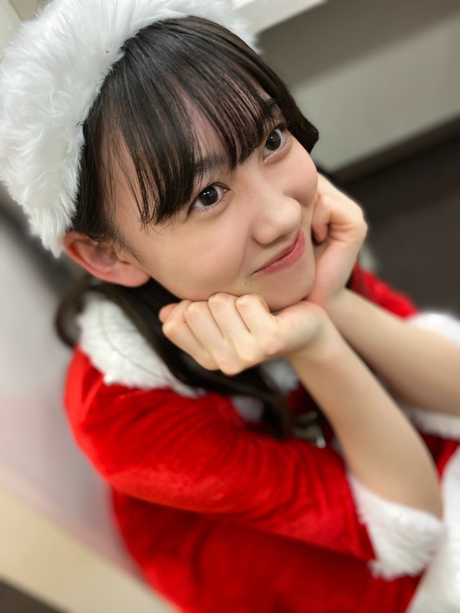
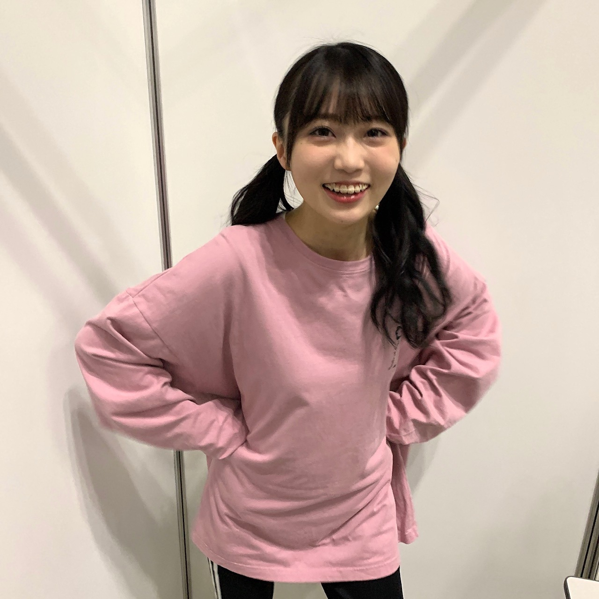
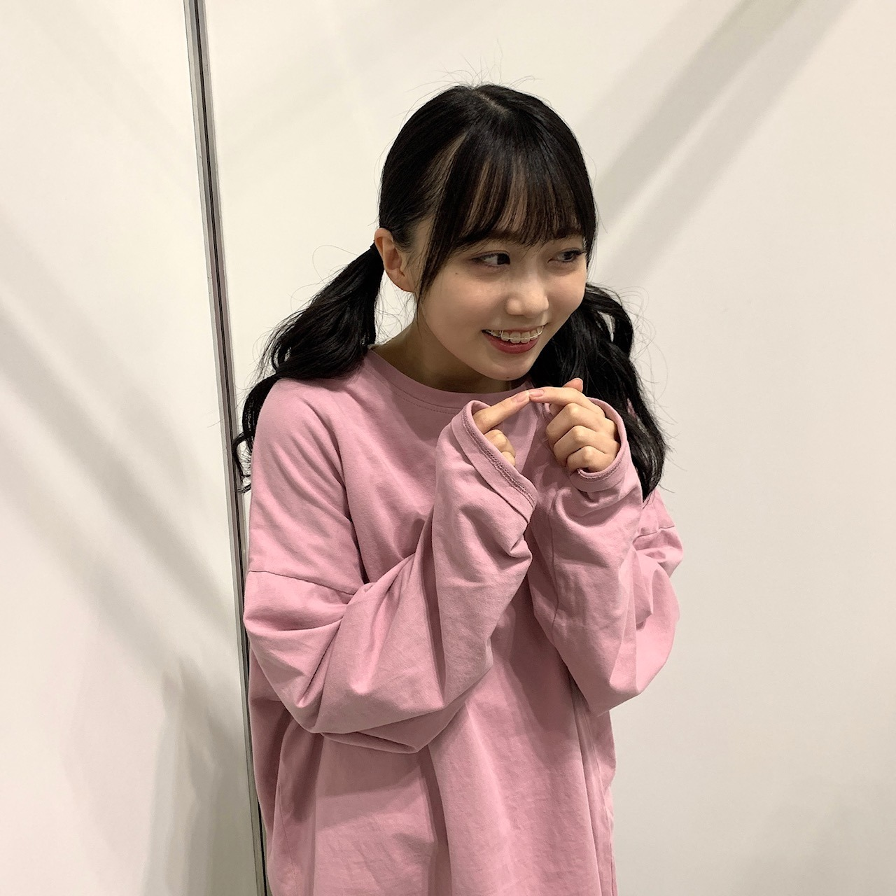
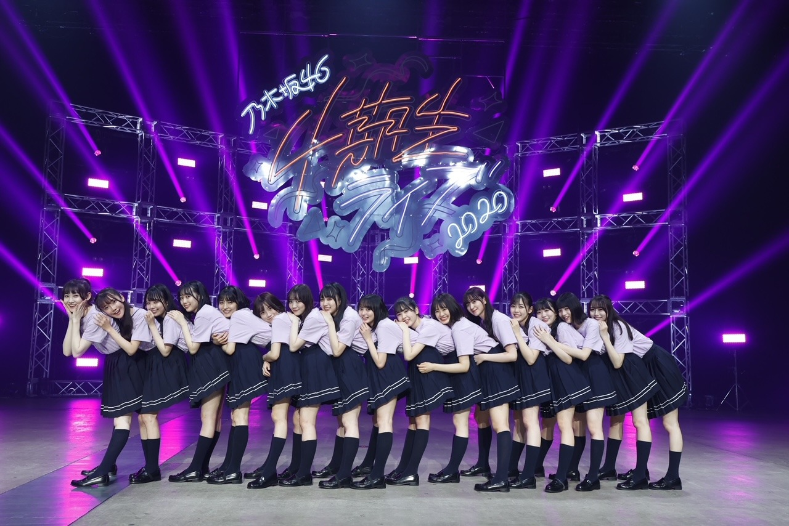
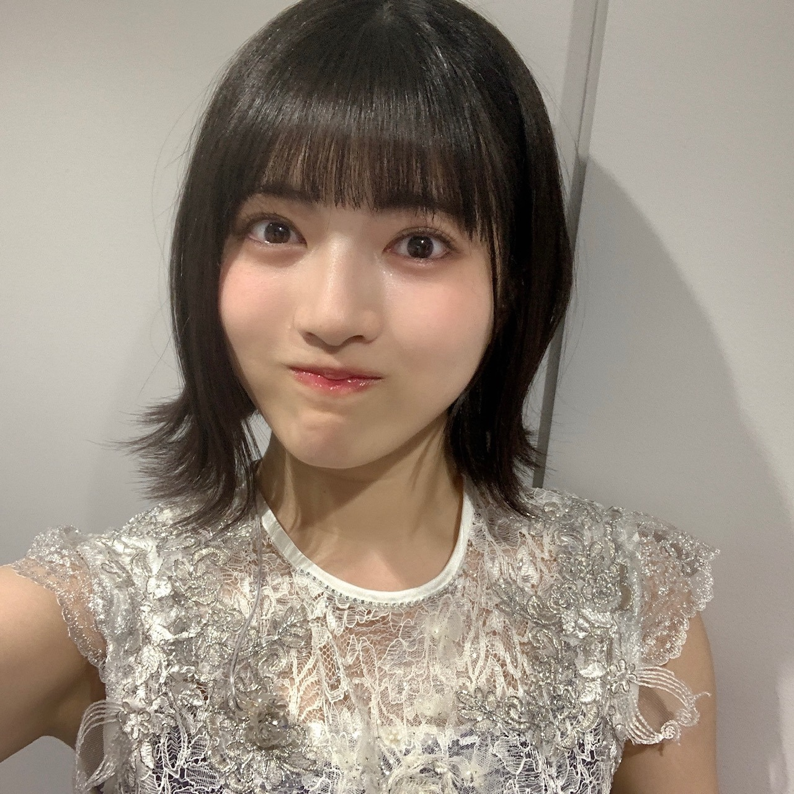
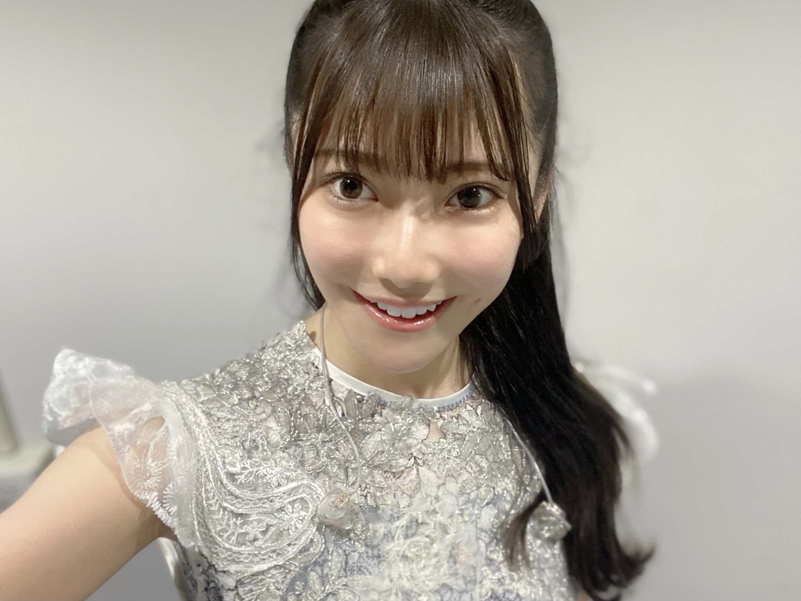

2020/1212Satレア☺︎弓木奈於
こんにちは！
こちらをクリックしてくださり、ありがとうございます！
昨日の沈黙の金曜日も楽しかったです✨
私にとって、華の花のはなの金曜日です☺︎
乃木坂46 4期生
京都府出身
弓木奈於（ゆみきなお）です|•'-'•)و✧

現在発売中の、『週刊ヤングマガジン』さん
2・3合併号さん
オフショットです✨

前回のブログでお話ししていた、お団子です☺︎
レア？レア！( ｰ̀֊ｰ́ )✧
---------- ｷﾘｶｴ ---------
❁ちょこっとお返事のコーナー❁
⚫︎なおちゃんは冬スカート派？？？ズボン派？？？
今まではスカートが多かったのですが、今年の冬はズボンにも挑戦しようかなと思っています...(◦ˉ ˘ ˉ◦)
⚫︎好きなお餅の食べ方は何ですか?
きなこ餅にするか、おぜんざいが好きです(∩ˊᵕˋ∩)･*
祖母がおやつの時間によく作ってくれていました☺︎
⚫︎ライブ終わって 自分へのご褒美は、何かな？これからでも良いよ。ほなね。
美味しいフルーツサンドをいただきました(*´˘`*)幸
ほなね。(* ॑ ॑* )⸝
⚫︎ ライブの疲れは取れましたか？
むしろパワーをいただきました✨
いただいているパワーを胸に、毎日舞台『ナナマル サンバツ THE QUIZ STAGE O(オー)』の稽古に励んでいますᕙ( ˙-˙ )ᕗﾏｯﾁｮ
⚫︎4期生ライブの練習やリハ中、メンバー内で流行っていた事は有りますか？
ずっとダンスの確認をしていたので、その他だとみかん...ですかね？笑
矢久保ちゃんとはコスメの話がたくさん出来て嬉しかったです(∩ˊᵕˋ∩)･*
4期生ライブ2020の感想をたくさんコメントしてくださって、本当にありがとうございます✨
皆さんのコメントを見て、涙が出ました...(TT)✨
乃木恋のイベントや、チェキや、オンラインミート＆グリートのご報告をしてくださったり、日本語でコメントしてくださったり、全部全部ありがとうございます。✨

黒見ちゃんが撮ってくれました☺︎
やっぱり照れちゃって、すぐ目を逸らしてしまいます( ˙༥˙ )
---------- ｷﾘｶｴ ---------
次は、黒見ちゃんです！
美佑ちゃんからチョコレートの報告いただきました〜(、._. )、♡
私は、上半身がイチゴのチョコレートを食べたよ。
最後まで読んでくださり、ありがとうございました✨
ニットを着ても寒い季節になって参りましたので、お体に気をつけて毎日素敵な一日になりますように...✨
2020/1211Fri勇気を出すんだ 松尾美佑
4期生ライブ2020 ありがとうございました！
私達新4期生にとって、初めての4期生ライブ
初めての事、新しい事ばかりで
知らないうちに自分の限界を決めつけようとしていた自分に腹が立ったり、
自分を信じてみたり、
自分と沢山コミュニケーションをとりました
でも、自分の中だけじゃなくて
みんなに頼っていい事、みんながいる事を
みんなが教えてくれました。
それだけで凄く心があったかくなって
幸せに気付けて良かったなと思いました。
もう見たことある写真かもかもですが、
お気に入りなのでもう一回見て欲しいです！
高校2年生16歳の松尾美佑です！
まつおみゆですˊᵕˋ
4期生ライブ2020、改めてありがとうございました！！
そして感想をコメントに下さった皆さん、
本当に嬉しく読みました！
ありがとうございます！
まずコメントにも沢山頂いたユニットコーナー
『Threefold choice』
のお話から！
今回有難いことにレイちゃんと黒見ちゃんと3人で披露させて頂きました
同い年でいつもにこにこな2人と一緒にできることも、
その曲がThreefold choice だということも、
全てが嬉しくて有り難かったです
ステージの後ろのスクリーンに映っていた
巨大なレイちゃんツリー、くろみトナカイ、みゆサンタ
あの映像の撮影も本当に楽しくて、
3人でひたすらわちゃわちゃしました( ᐛ )
レイちゃんツリーが本当に可愛くて面白かったです(⸝⸝⍢⸝⸝)
黒見ちゃんは黒見ちゃんらしいお上品なトナカイさんでした(*¨*)
リハーサルの時から曲が始まる直前に3人で
頑張るぞ！の"えいえいおー！"をしていました！
演出も本当に可愛く面白くして下さって、
楽しくて楽しくて
"笑顔届いたよ！"
と言ってくださった方がいらっしゃって本当に嬉しいです☺︎

photo by トナカイちゃん
そして新曲
『Out of the blue』
4期生16人として初めての楽曲を頂きました
本当に有難いです。
振り付けが本当に可愛くて、
皆さんともいつか一緒に踊りたいです！
^._.^ ←ねこ
私のお気に入りはラスサビの
みんなで一緒に一列で前に出てくる所です！
16人でこれからももっと前に一度進みたいです！
1度聞いたら頭の中の再生ボタンが止まらないリズムも大好きです！
そして4期生のみんなにとって大切な
『4番目の光』を今回16人で披露させて頂きました。
有難い気持ちと自分達がいてもいいのかという不安とが混ざっていました。
でも、せいらちゃんが元々16人だったと言ってくれて、本当に嬉しくて
不安で縮こまっていた心が膨らんで弾けて温かさが広がりました。
歌割りにも入れてもらい、
ゆりちゃんとせいらちゃんが
"おいでおいで〜"と毎回してくれて、
目を合わせて安心させてくれて、
背中をぽんぽんとしてくれて、
本当に優しくて嬉しくてしょうがなくて。
この期間、本当にみんなから優しさを沢山貰って心の温かさから生まれた幸せに溢れた空気が宝物になりました。
見て見て見て！


可愛いでしょ〜！！！！！
悩める矢久保ちゃん
お気に入り過ぎて皆さんにも自慢したくなりました。
今回フォーメーションがお隣さんなことが多くて、いっぱい助けて貰っちゃいましたˊᵕˋ
身長差が凄くてお互いいつもびっくりし合っています
みにまむちゃんです
明日は〜
なお〜〜〜〜〜〜〜〜〜
今日のアドベントカレンダーのチョコは
ミルクチョコレートの中にホワイトチョコが入ってるのだったよ
最後までありがとうございました！
ミュウでした¨̮
ばいっっっっっっ( Ꙭ )/''
《あとがき》
只今、とんでもなく携帯が暴走しておりまして。
まともに文字を打っているつもりでも全く違う文章が登場する事件が多発しています。
精一杯丁寧に確認をしながら書いていますが誤字がありましたらすみません( ᵕ ᵕ̩̩ )
ほんとのほんとのばいっっっっっっ( Ꙭ )/''
またね( Ꙭ )/''
2020/1210Thu自分のことが好きじゃなかった 林瑠奈
乃木坂46 4期生ライブ2020
本当にありがとうございました。
"皆さんに林瑠奈が好きと自信を持って言っていただけるように"
できていたでしょうか。
16人体制となって初めての4期生ライブ。
そりゃ一筋縄では行かないことくらい、言うまでもなく自分でわかっているつもりでした。
でも実際は、わかっているつもりでいただけ。
気づいた時には、前へ上へと、追いつくことに必死で周りが見れなくなっていました。
それでも、『全力で楽しかった』と言えるのはみんなが沢山助けてくれたから。
その感謝を返せるように、より一層励んでいきます。

...........................................................................
ユニットコーナーで、わたしはソロで歌わせていただきました。
「自分のこと」
何度も何度も、再び歩き出す活力をいただいた大切な曲。
ソロをやらさせていただくことをお聞きしたとき、真っ先にこの曲を選曲しました。
緊張と、身体が抱えることのできないくらいの思いが交差して交差して、歌っていたあの瞬間の記憶がありません。
感情のスクランブル交差点です。
たぶん色んなことを考えて、思い出して泣いてしまいそうになっていました。
嘘です、汗ですよ。
でもコールアンドレスポンスのコーナーになって、みんなが良かったよと沢山励ましてくれたのは覚えています。
ライブが終わった後、中元日芽香さんが4期生ライブを見てくださっていたことをお聞きしました。
メッセージもいただきました。
もっともっと頑張ろうと思えました。
サイリウムカラー。
ピンク×ピンクにさせていただいていることの重み。
全神経で感じているこの大切な重みを、これからも背負わせていただきたい。
中元さんの大切にされている曲を、色を
自分なりの力で大切にパフォーマンスさせていただきました。
本当にありがとうございました。
...........................................................................
アンコールでは新しい4期生楽曲を披露させて頂きました。
『Out of the blue』
初めて参加させていただいた4期生楽曲という贔屓目は入ってしまいますが、
曲調、歌詞、振り付けとどこをとっても本当に大好きです。
センターを務めるせいらちゃんには、4期生ライブを通して沢山お世話になりました。
本音を全力で受け止めてくれて、一個一個丁寧に振りを教えてくれたこと、本当に感謝しかないです。
ポジションが近くになることが多かったこともあって、わたしが気づけなかったところまで見てくれていました。
心から信頼したいなと思ったし、大切だなとライブ中に何度も思いました。
本当に本当にせいらちゃんが大好きです
...........................................................................
明日はミュウちゃんです。
ほんまにいっぱいありがとう。
P.S.裏話等々、コラムにも書かせていただきますね。
アディオス！！！！！！！！
誰かの影響受けちゃうなんて。

緊張してませんから！！の顔
をしながらみゆちゃんにぎゅってしてもらいました。
かしこ
2020/1209Wed私はまだ何もと言うから 。佐藤璃果
こんにちは
乃木坂46 4期生 岩手県出身
佐藤璃果です。


みんなと同じような写真ですが
大事な写真なので！
乃木坂46 4期生ライブ2020
ありがとうございました！︎︎☺︎
私はこのライブに全力で挑んだと
言えることが嬉しいです。
もちろんダンスも歌もまだまだです。
こんなに短期間で色んな曲や
演出を覚えたりするのは初めてと
言っても過言ではありませんでした。
4期のみんなは出来るのに
私たちは出来ないことが多くて、
同じ4期生として
ステージに立たせて頂くのに、
出来ない自分がもどかしくて。
ずっと必死でした。
16人はみんな本当に個性豊かで、
みんながキラキラしていて、眩しくて
その光の中に私は入れているのか、
4期のみんなに何も出来ていなくて申し訳ないなという感情でした。
11人での4期生は
もうすごくキラキラしていて
私たち5人が入ってから
もっとキラキラが増したと
言っていただけるように、
これからまた一つ一つ積み重ねていきたいです！
皆さん、
これからもよろしくお願いしますね！
最後のパジャマでの
16人でのわちゃわちゃ感を見ていたら
ああ、ずっとこの平和な時間が続いてくれればいいのにな
と思いました。
そういうのも含めての
リハでの涙です。
実は本番もステージ袖で泣いてしまうことはあったんですけどね。内緒ですよ内緒
マネージャーさんに助けて頂きました。
感謝です❄️
~~~~~~~~~~~~~~~~~
ユニットコーナーは、
｢白米様｣を
❁まゆたん、矢久保ちゃん、ゆりちゃん❁と
一緒にパフォーマンスさせて頂きました。
私はリハの時、
まゆたんが矢久保ちゃんの事を
本当に可愛いねぇって褒めていて、
それに対して矢久保ちゃんが
テレたり謙遜したり、
ゆりちゃんが、何かをした後に、
ごめんね、ありがとーう。
と言ってくれる
優しい空間が大好きで、ほんの少しの
ユニットコーナーだったのに
このメンツが大好きになりました。
まゆたん、
お洋服とご飯待ってます♡
みんなと歌えて幸せでした！

~~~~~~~~~~~~~~~~

両耳かけゆる巻でした
私はね、白米様から4番目の光の衣装に
着替えている時
リハでも本番でも物凄く感情が動いて、
どうしようって思っていたのですが、
この衣装、なんと西野さんの衣装でした、
加入前から大好きな西野七瀬さんの
衣装でパワー頂きました。
今回こういった状況でのライブで、
皆さんに元気を直接ではなく配信ライブという形でも元気を届けられるという事の
ひとつの証明になればと思います。
16人の大事なメンバー、
沢山支えてくださったマネージャーさん、
ずっと遅くまで頑張ってくださったスタッフさん全ての方に感謝です。
ありがとうございます！！( ¨̮ )
~~~~~~~~~~~~~~~~
4期生楽曲
｢Out of the blue｣
せいらちゃんがセンターです！
せいらちゃんは本当に私達が入りたての頃から気にかけてくれていました。
隣に来て話しかけてくれたり、
色々心配してくれたり、
そんなせいらちゃんが大好きです。
沢山振りの動画を撮らせて貰っちゃって
自分自身の事でもきっと大変だったのに、
快く受け入れてくれてありがとう。
初めて頂いた16人での楽曲、
磨いて磨いてもっといいパフォーマンスをしていけるようにこれからも大事にしていきます。
私はレイちゃんとシンメで
さやか(ちゃん)の隣です！
周りを沢山見て色々な事を吸収出来ればと思います。
｢Out of the blue｣の歌詞も大好きですし、
振り付けも可愛らしくて好きです。
初めての自分の歌割りがあることに感動しました。
皆さんが好きな所も沢山教えて下さい！
素敵な曲を歌わせて頂けることに感謝です。
沢山の方に届きますように。
｢Out of the blue｣
の意味、調べました？私は調べました( ˙º˙ )
❁
4期生ライブ2020
4期生全員が1番輝いていました。
全員がナンバーワンですよね
永遠に記憶に残るライブになりましたか？
私はなりましたよ。
温かいコメントもありがとうございます。
~~~~~~~~~~~~~~~~~~~
明日はるなぴです。
本当本当にお疲れ様！
~~~~~~~~~~~~~~~~~~
皆さんにとって
素敵な1日になりますように。

またね。
#46 りか
2020/1208Tue影ナレとOVERTURE。黒見明香(16)
ライブ後にふと、そんな言葉を頂きました。。。
もちろん、まだまだ
足りていない事、出来ない事ばかりを
痛感して申し訳なく、反省をくり返す日々です...
けれども、励ましでも、そんな言葉を
かけて貰えたこと。。
じわーっとまた涙が込み上がってきて
忘れられない記念日になりました。
＊
寒いね〜！今日も一日お疲れ様でした✩︎⡱
ココを見つけてくださり ありがとうございます♪
乃木坂46 ４期生の黒見明香です。
すこーしだけ自己紹介させてください☺︎
♪:*:･･:*:･･:*:･･:*:･･:*:･･:*:･♪:*:･･:*:･･:*:･･:*:･･:*:･･:*:･♪
黒見 明香（くろみ はるか）
2004年1月19日生まれ 16才
香港生まれ・東京都出身です
あだ名： くろみん・黒見ちゃん
3の倍数9・6・3(くろみ)
と覚えてもらえたら嬉しいです♪
♪:*:･･:*:･･:*:･･:*:･･:*:･･:*:･♪:*:･･:*:･･:*:･･:*:･･:*:･･:*:･♪
-:-:୨୧:-:- 大好きで大切な16人のかけがえのない仲間です✨（公式の写真とちょっぴり違うんだよ〜探してみてね☺︎笑）
【 乃木坂46 4期生ライブ2020✨ 】
先輩方が不安でいっぱいの本番を見守っててくださってて、
ライブ後に、あたたかなお言葉を掛けてくださった事も
4期生を育てて、いつも教えてくれる、
大好きな、11人の 憧れのお姉さんたちが、
『自主練』を呼びかけて場所を取っててくれたり、
励まし、たくさん教えてくれました。
＊
⚫︎"走れ!Bicycle"でいつも顔を見合わせて笑ったり、ふざけてくれる優しいさくちゃん

-:-:୨୧:-:- 足りない所ばかりでアイドルらしくない私ですが、せいいっぱい坂を登りたいです。
円陣なんか参加させて頂いていいのだろうか...
畏れ多い...><
アイドルってなんだろう・・・
少しでも乃木坂を、4期生を、目指せるように、
たくさん考えました。
誰かのことを一生けんめい『応援したいっ！』って本気で思ったら
たとえどこにいても、どんな形でも、
それは"アイドル"なのかもしれない。。。と思いました。
＊
そして、わたし達が
「少しでも元気になってほしい！」「笑顔になってほしい」
一番応援したい！と思って、日々心の一番近いところに居る
乃木坂と一緒に歩んでくださっている大切な皆さんが、
"私たちのアイドル"です (*ˊᵕˋ*)੭✨
あなたがいるからこそ！
頑張れるんだな、と毎日実感しています。
★前回『ここだけの秘密だよ！』笑 で
先輩方が大切に築いて来てくださった場所へ、
初対面の方に、どうしたら、せめて少しでも乃木坂らしく、お姉さんらしくなるだろうと悩んだ結果の・・・
精一杯の、背伸びで、なんだか恥ずかしいです\(//∇//)\笑
＊
先日、靴を脱いで、"たたみの楽屋"で
マネージャーさんに
「くろみ、靴下穴空いてるよ・・？」
と指摘され・・・
びっくりして、みんなで転げながら大笑いして、
すごーく恥ずかしかったです。。。
（そんなわたしには、
ライブ前に"少し早いクリスマスプレゼント"として
スタッフさん達がクリスマス柄の新しい靴下を
プレゼントして下さいました((〃ω〃))笑）
引き続き・・・
① 12月18日(金) 開場 16:30 ／ 開演 18:00 《ライブ配信予定》
② 12月19日(土) 開場 16:30 ／ 開演 18:00 《ライブ配信予定》
③ 12月20日(日) 開場 16:30 ／ 開演 18:00 《ライブ配信予定》
ブログやお手紙で、たくさんのコメントや感想送って下さり
本当にありがとうございます✩︎⡱
今回、ライブ見て初コメントだよー！というあなたも、
いつも近況を教えてくださるあなたも、
大切な時間を使ってお話しして下さり
本当にありがとうございます✨
あなたに出逢えた奇跡に、感謝しながら、
大事に、一つずつ全部読ませて頂いています((〃ω〃))
皆さんのことを知ることが出来る、
私の１日の中で『１番幸せな時間』です♩
いよいよ１月から！初めての個別トーク会で、
＊
いよいよ年末が近付いてきて、仕事や勉強が忙しかったり、
なんだか体調イマイチだよー、疲れちゃったよーって方も
本当に、お疲れ様でした✩︎⡱
きっと心も、身体も、しんどい時もあるかと思います。。
どうぞ、皆さんが 少しでも
ひとときリラックスできますように...✩︎⡱
と願っています(*´-`)
初めて会える日を、楽しみに待っています♪
＊
明日は、よく写真を撮ってくれる優しいお姉さん、
読んでくださり、本当にありがとうございます☺︎
次回も、会えたら嬉しいなぁ✨
またねヾ(･ω･*)
くろみはるか☺︎
☆ 明日のあなたのラッキーナンバー：❻ と ❶
♪:*:･･:*:･･:*:･･:*:･･:*:･･:*:･♪:*:･･:*:･･:*:･･:*:･･:*:･･:*:･♪
・
・
・
＜ちょこっとアンコール♬笑＞
〜クロミ・ル・フィーユ〜
（クロ見るFeel YOU☺︎）
＜ゲームコーナー✨＞
⚫︎ くろみんは、プロスピ交換会どうだったー？
交換会、初めてやった気がする！
⚫︎ プロスピエナジーが1500以上あったけど今は100切ったからまた集め直さないとね
◯私も今1000くらいしかないからまた集めなおそうと思ってるよ〜！
一緒に頑張ろうね〜☺︎
⚫︎ 今はバッティングトラベラーのイベントだね。
◯今イベントなかなかできてなくて、またイベントやったら報告するねー笑
⚫︎ 黒見ちゃんはオーダーにOBの選手とか入ってる？
◯うん！OBの選手は1人でDHに入れてるよ〜
⚫︎ 乃木フェス新4期生の初サインイベでくろみんレーン2位でフィニッシュしたよ～。
◯凄いー、嬉しいな〜☺︎！イベントお疲れ様でした！２位おめでとう！！
⚫︎ 乃木フェスのイベント、無事に抽選圏内入ったよー！！当たると良いなぁ。
◯乃木フェスイベントお疲れ様、頑張ってくれてありがとうー！当たってくれるといいな！
⚫︎ 乃木フェスはダイヤ不足なのでメダルガチャでNの黒見ちゃんや新4期生の皆が出るまで回してゲットしました！
◯ゲットしてくれてありがと！嬉しいなぁ☺︎
⚫︎ 『ドラクエ』とか『ポケモン』とかロールプレイングゲームはやった事ありますか？
◯少しやったことはあるよ！あんまり上手くなくて、そのまま止まっているの〜
⚫︎ パズルゲームが大好きで小さい頃からやってます！！
◯パズルゲームなかなか難しいけど、私も好きだよ〜☺︎
⚫︎ 黒見ちゃんはプロ野球は基本はパリーグ寄りなのかな？
◯コメントでパ・リーグTVのこと頂いたからお話していたよープロ野球全体を見るのが好きだから特にそういうわけではないよ〜♬
♬ *。♩*。♬
そして、お誕生日を迎えるあなたへ・・
✨HAPPY BIRTHDAY✨
どうぞ素敵な一年になりますよう✩︎⡱
♪:*:･･:*:･･:*:･･:*:･･:*:･･:*:･♪:*:･･:*:･･:*:･･:*:･･:*:･･:*:･♪
ここまで読んでくださったアナタ、ほんとうにありがとう♡
またねヾ(･ω･*)

PROFILE
新4期生リレー
202104
| SUN | MON | TUE | WED | THU | FRI | SAT |
|---|---|---|---|---|---|---|
| 1 | 2 | 3 | ||||
| 4 | 5 | 6 | 7 | 8 | 9 | 10 |
| 11 | 12 | 13 | 14 | 15 | 16 | 17 |
| 18 | 19 | 20 | 21 | 22 | 23 | 24 |
| 25 | 26 | 27 | 28 | 29 | 30 | |